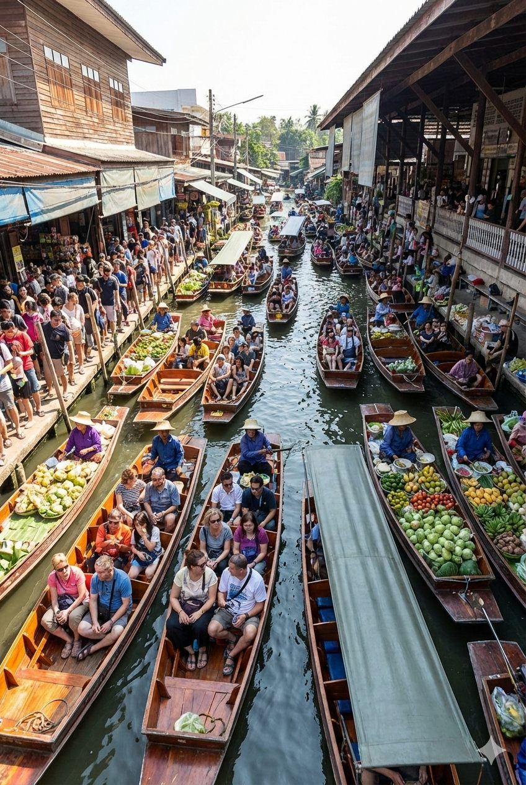
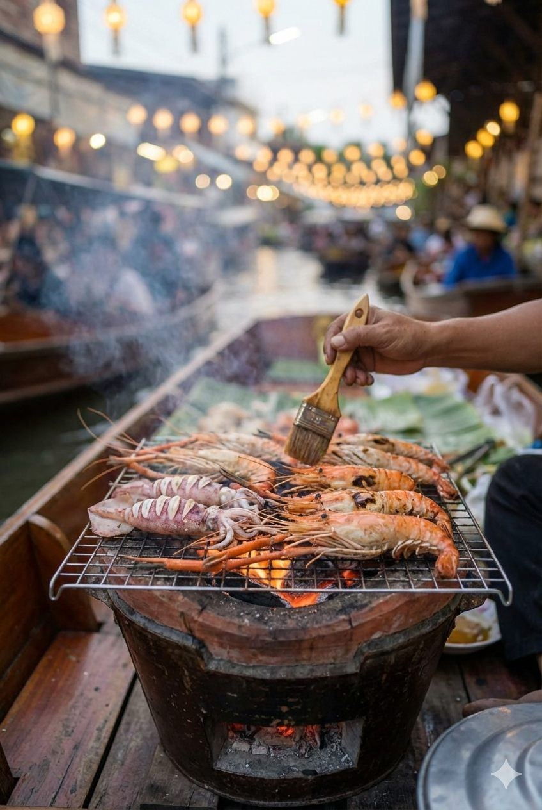

Bangkok's floating markets represent one of Thailand's most iconic and authentic cultural experiences. These traditional markets, where vendors sell fresh produce, local delicacies, and handmade crafts directly from wooden boats on scenic canals, showcase centuries-old Thai commerce traditions that continue to thrive today.
The floating markets around Bangkok offer visitors a glimpse into traditional Thai life, where waterways served as the primary transportation and trade routes. Vendors paddle their boats loaded with tropical fruits, freshly cooked pad thai, coconut ice cream, and colorful handicrafts, creating a vibrant and bustling atmosphere that's both photogenic and culturally enriching.
What makes these markets special is their authenticity and morning atmosphere. Early morning visits reveal the markets at their most genuine, with local farmers bringing fresh produce from their gardens, traditional cooking happening on boat stoves, and the peaceful sounds of paddles cutting through canal water creating an unforgettable sensory experience.
While there are several floating markets around Bangkok, two stand out as the most popular and accessible for tourists staying at Royal Ivory Hotel. Each offers a different experience, from the bustling tourist-friendly atmosphere to more intimate local settings.
Damnoen Saduak is Thailand's most famous and largest floating market, located in Ratchaburi Province about 100 kilometers southwest of Bangkok. This market offers the classic floating market experience with hundreds of vendors, colorful boats, and endless photo opportunities.
🚤 Why Choose Damnoen Saduak:
Amphawa Floating Market offers a more intimate and authentic experience, particularly popular with Thai locals and evening visitors. Located in Samut Songkhram Province, this market is famous for its seafood, evening atmosphere, and firefly watching tours.
🌅 Amphawa Special Features:
Floating markets are located outside Bangkok, requiring 1.5-2 hours travel time each way. The most convenient option for hotel guests is joining organized tours that include transportation, boat rides, and often additional cultural attractions.
Hotel pickup tours are the most convenient way to visit floating markets. These all-inclusive packages typically include air-conditioned transportation, English-speaking guides, boat rides through the markets, and sometimes additional stops like elephant shows or cultural villages.
Tour Benefits: No navigation stress, cultural commentary, photography assistance, group discounts for Royal Ivory guests, and guaranteed return to hotel.
Independent Travel Challenges: Language barriers, navigation complexity, timing coordination, and limited cultural context.
💡 Royal Ivory Guest Tip: Our concierge can arrange discounted group tours for hotel guests. Book floating market tours at least one day in advance for better rates and guaranteed availability. Early morning tours (6:00 AM pickup) offer the best market experience.
| Time Period | Market Activity | Best For | Atmosphere |
|---|---|---|---|
| 🌅 Early Morning (6:00-8:00 AM) | Local farmers arrive with fresh produce, authentic vendors | Photography, authentic experience | Peaceful & Authentic |
| 🚤 Mid-Morning (8:00-11:00 AM) | Peak activity, full selection, boat tours active | Shopping, boat rides, food tasting | Bustling & Vibrant |
| ☀️ Late Morning (11:00 AM-12:00 PM) | Vendors begin packing up, reduced selection | Final purchases, fewer crowds | Calming Down |
| 🌆 Afternoon (Amphawa only) | Evening market setup, seafood preparation | Dinner, firefly tours, sunset | Romantic & Local |
Floating markets offer incredible variety of fresh Thai produce, traditional foods, and authentic handicrafts. The experience combines shopping with cultural immersion as vendors demonstrate traditional cooking methods on their boats.

The boat tour experience is essential for fully experiencing floating markets. These guided boat rides take you through narrow canals, past vendor boats, and into the heart of the traditional market atmosphere where you can shop and eat directly from the boats.
🚤 Boat Tour Etiquette:
Respect vendors by purchasing items when you board their boats for photos. Have small bills ready for quick transactions. Don't lean out of boats unsafely. Listen to your boat driver's safety instructions. Tip boat drivers 20-50 Baht for good service.
Floating markets offer some of Thailand's most photogenic and culturally rich scenes. The combination of colorful boats, traditional vendors, exotic fruits, and scenic canals creates endless opportunities for stunning photography.
📸 Golden Hour Magic: Early morning light (6:00-8:00 AM) provides the best lighting for market photography. The soft morning light enhances fruit colors and creates beautiful reflections on canal water.
🤝 Respectful Photography: Always ask permission before photographing vendors directly. Purchase items from boats where you take photos. Smile and be friendly - vendors often become great photography subjects when treated respectfully.
Floating markets represent centuries of Thai cultural heritage when waterways served as Thailand's primary transportation network. These markets showcase traditional Thai commerce, community interaction, and agricultural practices that continue to thrive in modern Thailand.
Thailand's extensive canal system, built during the Ayutthaya period (1351-1767), created natural marketplaces where farmers could bring produce directly from their gardens to consumers. The floating market tradition represents sustainable, community-based commerce that predates modern transportation by hundreds of years.
Damnoen Saduak is the most famous and largest floating market, best for first-time visitors seeking the classic experience. Amphawa is smaller, more authentic, and less touristy, especially beautiful for evening visits. Both offer unique cultural experiences about 1.5 hours from Bangkok.
Visit floating markets early morning (6:00-9:00 AM) for the most authentic experience with local vendors and fresh produce. Markets are most active at sunrise and become less busy by noon. Amphawa is also beautiful for evening visits (4:00-8:00 PM) with sunset views.
Join organized floating market tours (1,200-1,800 Baht) with hotel pickup, or take bus from Southern Bus Terminal (100 Baht plus transportation). Tours include transportation, boat rides, and often cultural attractions. Journey time: 1.5-2 hours each way.
Fresh tropical fruits, traditional Thai dishes (pad thai, mango sticky rice), local snacks, handmade crafts, souvenirs, wooden carvings, textiles, and fresh coconut water. Markets specialize in local produce and authentic Thai food prepared on boats.
Yes! Floating markets offer an authentic cultural experience that showcases traditional Thai commerce and lifestyle. The combination of scenic boat rides, fresh local food, cultural immersion, and unique photography opportunities makes them a worthwhile day trip from Bangkok.
💰 Smart Shopping Strategies:
Fresh fruits: Prices are generally very reasonable - minimal bargaining needed.
Handicrafts and souvenirs: Gentle bargaining is expected and part of the fun.
Food items: Fixed prices for prepared foods - focus on quality and freshness.
Photography etiquette: Buy something small when taking photos on vendor boats.